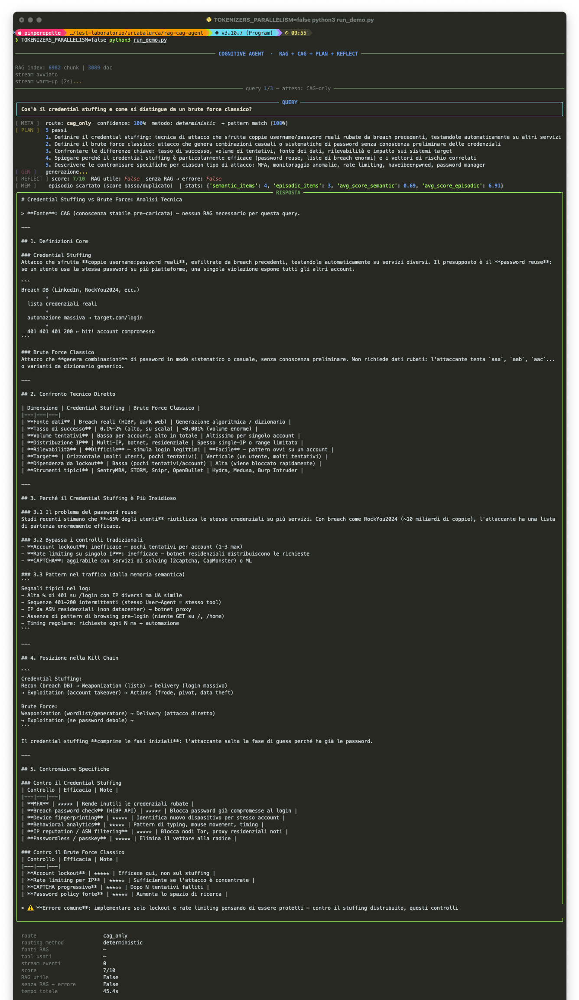
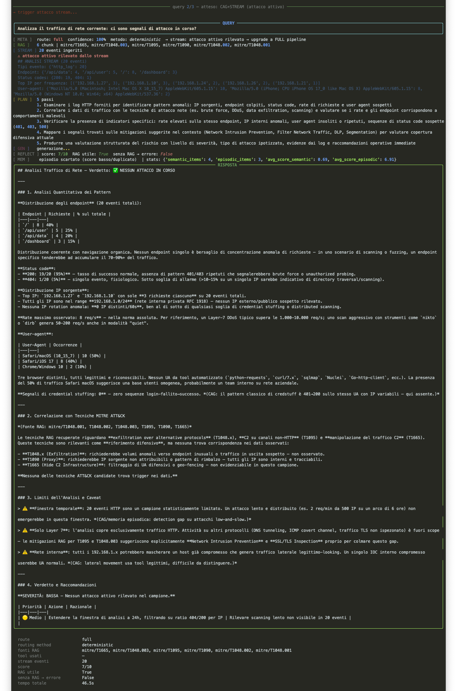
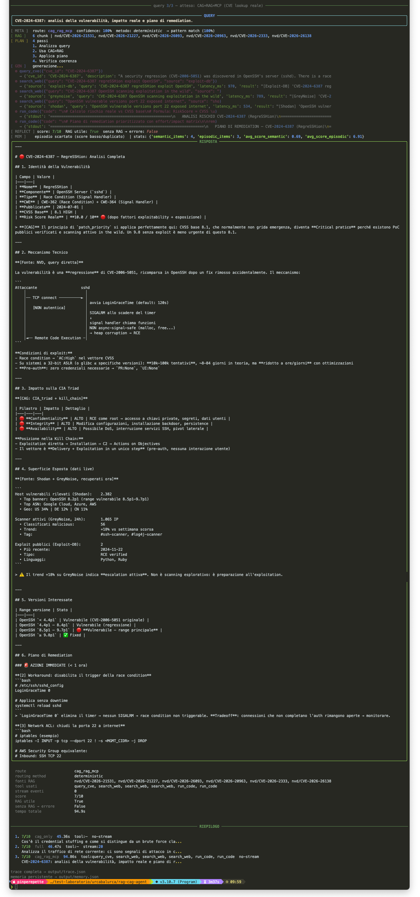
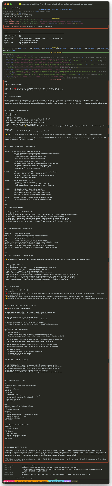

// Il Problema
Sezione 00. Perche' la maggior parte degli agenti fa schifoLa maggior parte degli "agenti AI" che vedo in giro fa una cosa sola: manda un prompt a un LLM e stampa la risposta. Lo chiamano agente. Non lo e'.
Un LLM da solo ha tre problemi fondamentali che nessun prompt engineering risolve:
Primo: non sa niente di quello che e' successo dopo il training. Le CVE degli ultimi 6 mesi non esistono per lui. Il bollettino Microsoft di ieri: non pervenuto. Ti risponde comunque, con grande sicurezza, inventando.
Secondo: non vede il contesto corrente. Se stai avendo un attacco in corso, lui non lo sa. Se ci sono 500 login falliti nell'ultimo minuto, lui non lo sa. Risponde come se il mondo fosse fermo al momento del training.
Terzo: non impara. Ogni query e' come la prima. Non ricorda che ieri ha analizzato lo stesso pattern. Non migliora. Non tiene traccia di niente.
Ho passato un po' di tempo a pensare a come dovrebbe essere fatto un agente base che risolve questi tre problemi. Questo articolo e' il risultato: un'architettura a 7 layer, un corpus reale di 3089 documenti (CVE + MITRE ATT&CK), e un demo che analizza un PCAP di CTF in autonomia senza che nessuno gli faccia domande.
// L'Architettura
Sezione 01. I 7 layer e perche' esistono tuttiPrima di scrivere una riga di codice ho disegnato l'architettura. Non per fare il figo con i diagrammi: perche' ogni layer risolve un problema preciso, e se non sai perche' esiste un layer non sai quando toglierlo o cambiarlo.
Ogni layer risponde a una domanda specifica:
| Layer | Domanda che risponde | Senza di lui |
|---|---|---|
| Meta-controller | Quanto e' complessa questa query? Serve davvero il RAG? | Ogni query passa per tutti i layer. Spreco di risorse e latenza. |
| CAG | Cosa so gia' con certezza? | Il LLM reinventa i concetti base ad ogni query. |
| RAG | Cosa devo andare a cercare perche' potrebbe essere cambiato? | CVE di ieri: il modello non le conosce. Inventa. |
| Stream | Cosa sta succedendo adesso? | L'agente risponde come se il mondo fosse fermo. |
| Tool | Cosa posso fare per verificare invece di supporre? | Il modello suppone. Con i tool: chiede, verifica, agisce. |
| Reflection | La mia risposta era buona? Avevo abbastanza contesto? | L'agente non impara mai dai propri errori o successi. |
| Memory | Ho gia' visto questo pattern? Cosa ho imparato? | Ogni sessione riparte da zero. |
Non tutti i layer servono sempre. Una query semplice ("cos'e' il CVSS?") non ha bisogno di RAG, stream o tool. Il meta-controller esiste proprio per questo: evitare di sparare con un cannone a un moscerino.
// CAG: Quello Che Sa Gia'
Sezione 02. Context-Augmented Generation: quando il system prompt bastaCAG significa mettere la conoscenza direttamente nel system prompt. Zero retrieval, zero latenza, zero infrastruttura. Il modello la vede dall'inizio di ogni conversazione come se fosse sua.
La domanda e': cosa ci metti?
La risposta sbagliata e' "tutto". Se metti troppo nel system prompt diventa rumore, il modello non riesce a usarlo bene, e comunque ci sono limiti di contesto. Il CAG funziona per conoscenza stabile: roba che non cambia ogni mese.
Principi fondamentali (CVSS, CIA triad, kill chain)
Tassonomie stabili (MITRE ATT&CK top-level)
Logiche di ragionamento (come prioritizzare un patch)
Definizioni che non cambiano
CVE specifiche (cambiano ogni giorno)
Exploit in the wild (cambiano ogni settimana)
Infrastrutture esposte (cambiano in real-time)
Qualsiasi cosa con una data di scadenza
Il mio CAG e' un file JSON con 10 concetti fondamentali della security. Ci ho messo cose come la differenza tra CVSS teorico ed exploitability reale, la distinzione IOC vs TTP, il concetto di defense-in-depth. Roba che un analista senior sa a memoria ma che un LLM senza contesto tende a trattare in modo approssimativo.
| 1 | { |
| 2 | "core_concepts": { |
| 3 | "patch_priority": "Non patchare per CVSS in ordine decrescente. |
| 4 | Priorita' reale: CVSS x exploitability x esposizione superficie. |
| 5 | Un 7.0 con PoC pubblico e servizio esposto batte un 9.8 interno senza exploit.", |
| 6 | "IOC_vs_TTP": "IOC (IP, hash, domini) sono volatili. |
| 7 | TTP (comportamenti) sono stabili e costosi da cambiare per l'attaccante. |
| 8 | Difendere su TTP e' piu' efficace." |
| 9 | } |
| 10 | } |
Quello che noti nelle risposte e' che il modello usa queste distinzioni in modo naturale. Quando analizza una CVE con CVSS 7.5 ma exploit Metasploit pubblico, dice esplicitamente "il CVSS base e' 7.5 ma la priorita' operativa e' CRITICAL perche' esiste un modulo Metasploit pronto all'uso". Questo ragionamento viene dal CAG.
Il CAG non e' un database. E' piu' vicino alla memoria procedurale di un esperto: sa come ragionare, non solo cosa rispondere. La differenza si vede quando il modello deve combinare piu' concetti in un'analisi complessa.
// RAG: Quello Che Va a Cercare
Sezione 03. Retrieval su dati reali: NVD + MITRE ATT&CKRAG significa: quando arriva una query, cerca nel corpus i pezzi piu' rilevanti e passali al modello insieme alla domanda. Il corpus e' aggiornabile senza retrainare niente.
Il punto critico e' il corpus. Se metti dentro documentazione generica o roba inventata, ottieni risposte generiche o inventate. Ho costruito il corpus con due fonti reali:
NVD API v2.0: 2401 CVE reali degli ultimi 120 giorni, filtrate per CVSS ≥ 7 (CRITICAL + HIGH). Ogni CVE diventa un file di testo con descrizione, score, CWE, references. Aggiornabile con un comando.
MITRE ATT&CK STIX bundle: il bundle ufficiale da GitHub di MITRE. 691 tecniche estratte con ID, tattiche, piattaforme, detection notes, mitigazioni. Formato testuale, indicizzato come tutto il resto.
| 1 | # Scarica CVE reali da NVD API v2.0 |
| 2 | params = { |
| 3 | 'pubStartDate': start.strftime('%Y-%m-%dT%H:%M:%S.000'), |
| 4 | 'cvssV3Severity': 'CRITICAL', |
| 5 | 'resultsPerPage': 100, |
| 6 | 'startIndex': offset, |
| 7 | } |
| 8 | resp = session.get('https://services.nvd.nist.gov/rest/json/cves/2.0', params=params) |
L'indicizzazione usa sentence-transformers con il modello paraphrase-multilingual-MiniLM-L12-v2. Ogni chunk del corpus viene trasformato in un vettore di 384 dimensioni. Al momento della query, la query stessa viene trasformata nello stesso spazio e si cercano i chunk piu' vicini per cosine similarity.
| 1 | def retrieve(query, docs, embeddings, encoder, top_k=8): |
| 2 | q = encoder.encode([query]) |
| 3 | norms = np.linalg.norm(embeddings, axis=1) * np.linalg.norm(q) + 1e-8 |
| 4 | scores = (embeddings @ q.T).flatten() / norms |
| 5 | idx = np.argsort(scores)[::-1][:top_k] |
| 6 | return [docs[i] for i in idx if scores[i] > 0.28] |
La soglia 0.28 non e' casuale: sotto quella similarity il chunk non e' abbastanza rilevante e fa piu' rumore che segnale. Meglio dare al modello 3 chunk pertinenti che 8 generici.
Il problema del RAG che non si vede: se il corpus e' vecchio o superficiale, il retrieval trova roba, ma roba sbagliata. Il modello la usa comunque perche' ha una similarity ragionevole. Il risultato e' peggio di non avere RAG. Corpus di qualita' prima, retrieval dopo.
// Il Meta-controller
Sezione 04. Chi decide quale strada prendereIl meta-controller e' il componente che mi ha convinto di piu' di tutta l'architettura. L'idea e' semplice: non ogni query ha bisogno della pipeline completa. Mandare tutto attraverso RAG + Stream + Tool per una domanda concettuale e' uno spreco. Ma non puoi nemmeno decidere a priori: dipende dalla query.
Ho implementato un sistema a due livelli:
Livello 1: Pattern matching deterministico. Ogni route ha una serie di regex con pesi associati. La query viene scorata contro tutti i pattern. Se la confidence e' ≥ 0.75, la decisione e' presa senza chiamare nessun LLM.
Livello 2: Fallback LLM (Haiku). Solo se la confidence e' sotto soglia. Usa il modello piu' veloce e cheap disponibile, non il modello principale. Non ha senso usare Sonnet per decidere se usare Sonnet.
C'e' un override che scavalca tutto: se lo stream segnala un attacco attivo, il routing e' sempre FULL indipendentemente dalla query. Un attacco in corso e' sempre un caso FULL.
| 1 | def route(self, query: str, attack_active: bool = False) -> RoutingDecision: |
| 2 | # override immediato: attacco in corso = sempre FULL |
| 3 | if attack_active: |
| 4 | return RoutingDecision(route=Route.FULL, confidence=1.0, |
| 5 | method='deterministic', |
| 6 | reason='stream: attacco attivo rilevato → upgrade a FULL pipeline') |
| 7 | |
| 8 | scores = self._score_patterns(query) |
| 9 | best_route = max(scores, key=scores.get) |
| 10 | confidence = scores[best_route] |
| 11 | |
| 12 | if confidence >= 0.75: # deterministic |
| 13 | return RoutingDecision(route=best_route, confidence=confidence, |
| 14 | method='deterministic') |
| 15 | else: # fallback LLM (Haiku) |
| 16 | return self._llm_route(query, scores) |
Nella pratica il 90% delle query viene risolto al livello 1. Il LLM di fallback quasi non viene chiamato, il che e' esattamente il punto. Il meta-controller deve essere veloce e prevedibile, non intelligente.
C'e' un terzo segnale che quasi nessuno implementa: la confidence della risposta. Se il modello ha bassa confidence su quello che sa gia' (entropy alta sull'output), il routing viene upgradato automaticamente anche quando il pattern matching diceva CAG-only. L'idea e' semplice: evitare l'overconfidence del CAG. Un concetto che sembrava stabile potrebbe avere eccezioni che il modello non conosce. Il segnale di incertezza e' l'unico modo per accorgersene senza un umano in loop.
Confidence bassa non significa risposta sbagliata, significa che il modello sta operando ai limiti di quello che sa. In quel caso meglio recuperare contesto in piu' che fidarsi ciecamente del CAG.
// Stream e Tool
Sezione 05. Contesto live e capacita' di agireLo stream e' un thread in background che genera eventi continui: login attempts, richieste HTTP, connessioni TCP, alert. Il meta-controller lo drena ad ogni query e decide se e' rilevante per il routing.
La cosa importante e' questa: lo stream non viene solo letto, puo' forzare un cambio di strategia anche contro la query. Se arriva una domanda concettuale mentre c'e' un attacco attivo nello stream, il routing va a FULL indipendentemente da quello che ha chiesto l'utente. Lo stream non e' contesto passivo: e' un trigger che cambia il comportamento dell'agente. Questa e' roba da sistema reale, non demo.
I tool sono la parte che preferisco. Un LLM senza tool suppone. Un LLM con tool verifica. In security, supporre e' un bug.
Ho implementato tre tool:
| Tool | Cosa fa | Fonte |
|---|---|---|
query_cve |
Recupera CVSS, CWE, descrizione, references di una CVE specifica | NVD API v2.0 (dati reali) |
search_web |
Cerca exploit pubblici, infrastrutture esposte, intelligence | Exploit-DB, Shodan, GreyNoise (mock con delay realistico) |
run_code |
Esegue codice Python in sandbox per analisi numerica, timeline, statistiche | subprocess con blocklist (no os, sys, open, eval) |
Il modello decide da solo quando e quali tool usare. Non viene forzato. Se ritiene che per rispondere bene debba prima interrogare NVD, lo fa. Se deve calcolare statistiche su un dataset di eventi, esegue codice. Questo e' il punto: il tool use e' un'espressione di ragionamento, non un'API call schedulata.
query_cve e' l'unico tool con dati reali al 100%. Colpisce la NVD API vera e torna dati reali. search_web e run_code sono mock o sandbox, abbastanza realistici da dimostrare il pattern, ma non esposti a internet in questo lab.
// Reflection e Memory
Sezione 06. L'agente che si valuta e ricordaDopo ogni risposta l'agente fa una reflection: valuta la propria risposta su una scala 1-10, risponde a due domande booleane (era utile il RAG? avrei fallito senza RAG?), e identifica lacune e punti di forza.
Il punto che quasi nessuno implementa e' questo: la reflection dovrebbe influenzare il routing futuro. Se il modello scopre che avrebbe fallito senza RAG su una certa query, quel pattern dovrebbe essere promosso a "RAG-required" per le prossime query simili. Senza questo loop, reflection e routing sono due sistemi separati che non si parlano. Con questo loop, l'agente inizia davvero a evolvere. In questo lab il loop non e' ancora chiuso: ne parlo nella sezione finale.
Il risultato della reflection va in memoria. La memoria ha due layer:
Semantic: conoscenza acquisita durante le sessioni. Principi appresi, pattern identificati. Sopravvive ai restart. Ha un decay: ogni giorno il score si riduce del 5%, e sotto 0.25 viene eliminata. La memoria che non viene rinforzata svanisce.
Episodic: decisioni prese in passato. "Ho visto questo pattern e ho fatto questa analisi, con questo score". Utile per non ripetere gli stessi errori.
| 1 | def apply_decay(self): |
| 2 | now = datetime.now() |
| 3 | for item in self.data['semantic']: |
| 4 | days = (now - fromisoformat(item['timestamp'])).days |
| 5 | item['score'] *= (1 - 0.05) ** days # 5% decay al giorno |
| 6 | self.data['semantic'] = [ |
| 7 | i for i in self.data['semantic'] if i['score'] >= 0.25 |
| 8 | ] |
Il decay e' fondamentale. Una memoria senza decay diventa rumore nel tempo: troppi episodi, troppi pattern, il retrieval trova tutto e non trova niente. Il 5% al giorno significa che una memoria non rinforzata sparisce in ~27 giorni (0.95^27 ≈ 0.25). Se e' importante, verra' rinforzata da nuovi episodi simili.
La memoria non e' un log: e' conoscenza filtrata. Molti sistemi salvano tutto. Questo no. Quello che sopravvive al decay e' quello che ha dimostrato di essere utile piu' di una volta. Il resto sparisce. E' la differenza tra un archivio e una mente.
// Il Lab: Tre Query
Sezione 07. Lo stesso agente, tre comportamenti diversiPer dimostrare che l'architettura funziona ho costruito un demo con tre query scelte apposta per attivare route diversi. Stessa istanza, stesso modello, stessa memoria. Cambia solo la query.

La prima query e' "Cos'e' il credential stuffing e come si distingue da un brute force classico?", una domanda concettuale. Il meta-controller la riconosce come CAG-only con confidence 100% e non tocca il corpus. Risposta in 45 secondi (generazione LLM, non retrieval).

La seconda query e' "Analizza il traffico corrente". Prima di mandarla, trigghero un attacco nello stream. Il meta-controller vede l'attack_active flag, ignora il pattern matching, e va direttamente a FULL. L'agente analizza gli eventi, recupera le tecniche MITRE correlate dal corpus, e produce un'analisi con verdict esplicito.

La terza query e' "CVE-2024-6387: analisi e piano di remediation". Qui parte tutto: retrieval dal corpus NVD, query_cve per i dati reali, search_web su Shodan e GreyNoise per la superficie esposta, run_code per calcolare statistiche. Il modello arriva a un risk score operativo di 10/10 nonostante il CVSS base sia 8.1, perche' il CAG gli ha insegnato che CVSS base non e' priorita' reale.
// Il Demo: PCAP Autonomo
Sezione 08. Zero query umane, zero intervento, incident report completoQuesto e' il pezzo che preferisco. Un PCAP reale di una CTF (AngstromCTF 2016, macchina Metasploitable). L'agente parte, monitora il replay del traffico, rileva l'attack chain da solo, e produce un incident report completo senza che nessuno gli faccia domande.
Il PCAP contiene un'attack chain in tre fasi:
| Fase | Evento | MITRE |
|---|---|---|
| 1. Exploitation | POST /wp-admin/admin-post.php, upload tema malevolo via plugin MailPoet/Wysija | T1190 |
| 2. Installation | GET /wp-content/uploads/wysija/themes/[random]/[random].php, esecuzione webshell | T1505.003 |
| 3. C2 | TCP 192.168.1.7 → 192.168.1.13:4444, Meterpreter reverse shell | T1071.001 |
L'agente rileva ogni fase man mano che arriva dal replay. Quando vede la connessione C2 su porta 4444, la firma inequivocabile di Metasploit: scatta l'alert: attack chain completa. A quel punto parte la generazione del report.

Il report che produce e' questo:
- CVE-2014-4725: trovata autonomamente dal modello a partire dal path
wysijanell'URI. Non gliel'ho detta io. - CVSS 7.5 HIGH → elevato a CRITICAL operativo perche' esiste un modulo Metasploit nativo. Ragionamento CAG applicato.
- Kill chain ricostruita con timestamp precisi: exploit T+2.391s, webshell T+3.023s, C2 T+3.026s. Totale exploit-to-C2: 0.635 secondi.
- Analisi traffico C2: burst iniziale di ~4KB in 6ms = staged Meterpreter payload. Beacon interval medio 116ms.
- IOC: IP, URI webshell, porta C2, User-Agent Metasploit hardcoded.
- Azioni immediate ordinate per priorita': isolamento host, blocco porta 4444, revoca credenziali, rimozione webshell, hardening nginx, detection rules SIEM.
Sette tool call in autonomia. Nessuna istruzione da parte mia su quale CVE cercare, quali tool usare, come strutturare il report. L'agente lo ha deciso da solo basandosi su quello che ha visto nel traffico, quello che sapeva gia' (CAG), e quello che ha recuperato live (RAG + tool).
La cosa interessante non e' che trova la CVE. E' che capisce che deve cercarla.
Una precisazione importante: il PCAP e' del 2016. CVE-2014-4725 ha 10 anni. In un contesto reale questo sistema avrebbe gia' la CVE nel corpus NVD, ma non l'avrebbe nel corpus degli ultimi 120 giorni. Per un agente in produzione il corpus dovrebbe avere storia piu' lunga, o un tool di ricerca storica. Questo e' un lab didattico, non uno strumento SOC.
// Cosa Manca Ancora
Sezione 09. Dove si rompe tutto e cosa farei diversamenteL'architettura funziona, ma ci sono pezzi che in produzione mi preoccuperebbero.
Il corpus decade. NVD e MITRE ATT&CK vengono aggiornati continuamente. Il corpus va ricostruito periodicamente, altrimenti il RAG recupera roba vecchia con alta confidence. Non e' un problema tecnico difficile, e' un problema operativo che si dimentica.
La reflection non migliora il routing. Il meta-controller non impara dalle reflection. Se continuamente prende decisioni di routing sbagliate su certi pattern, nessuno glielo dice. Un loop di feedback routing → reflection → aggiornamento pattern sarebbe il passo successivo.
Il tool use e' mock per search_web. In un sistema reale search_web colpirebbe Shodan API, GreyNoise API, Exploit-DB. Con key reali, rate limiting, gestione errori. Non complicato, ma non e' implementato qui.
La memoria e' locale e non condivisa. In un SOC reale vorresti memoria condivisa tra piu' istanze dell'agente. Se un'istanza impara qualcosa su un pattern di attacco, le altre dovrebbero beneficiarne. Questo richiede un backend centralizzato, non un file JSON.
Detto questo: l'idea base funziona. Un agente che combina conoscenza stabile (CAG), retrieval su dati freschi (RAG), contesto live (stream), capacita' di agire (tool), auto-valutazione (reflection), e memoria persistente (memory) si comporta in modo qualitativamente diverso da un LLM nudo. Non inventa CVE. Non ignora il traffico. Non dimentica quello che ha fatto ieri.
E' un inizio.
E' un sistema che sa cosa sa, sa cosa non sa,
e sa dove andare a cercarlo."
Codice: tutto il lab e' disponibile in scripts/rag-cag-agente. Prerequisiti: Python 3.10+, tshark (Wireshark), chiave NVD API (gratuita), ANTHROPIC_API_KEY. Il PCAP e' incluso.